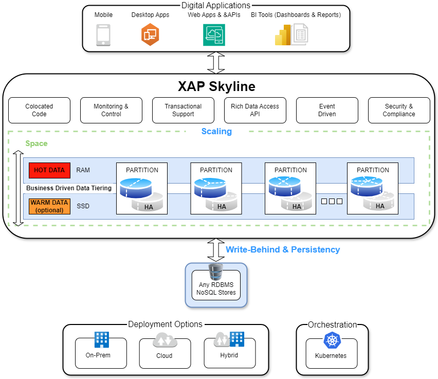

Overview
Introduction
benefits from high-speed, distributed in-memory data storage and processing grid. The platform colocates applications and data, offering ultra-low latency, high-throughput transaction and stream processing. offers a unique set of capabilities that are not available in simple caching solutions, such as:
-
SQL-99 coverage
-
Multi-criteria queries
-
Dynamic server-side processing
-
Full data integrity
-
Policy-driven data tiering
-
Seamless database integration - this is an optional add-on.
-
Cloud-native deployment
ensures data consistency and reliability across distributed environments by employing ACID-compliant transactions to maintain data integrity. It uses sophisticated replication and partitioning mechanisms to ensure high availability and fault tolerance, even in the event of node failures. These features, combined with its support for SQL-99 standards, ensures that will provide consistent, reliable data access and processing capabilities at scale.
Architecture

Architecture of
offers:
-
High availability, replication and persistence with optional data persistence and multi-datacenter replication
-
Full data life-cycle management on RAM, SSD/Flash, disk and external data stores, also supporting multiple data tiers
-
Support for an unlimited number of advanced indexes such as Exact, Range, Collections, Compound, Text, and Geo-spatial for optimal performance, with SQL-99 coverage. Unlike key-value stores that may need to duplicate the entire data store for each defined index, only creates additional indexing data structures on one instance of data.
-
SpaceDeck user interface for user management and control.
-
Support for a variety of data models, including POJO, Documents, and Key/Value
-
Seamless scaling up and out with no downtime
-
Easy integration with BI tools
runs server side processing, providing the high performance of advanced operations and avoiding data retrieval back to the client side. Aggregation is performed in-memory, on relevant data only, regardless of total data size. It uses Space-Based Architecture (SBA) as a primary design pattern. With SBA, applications are built out of a set of self-sufficient units, known as Processing Units (PU). These units are completely independent of each other, so that an application can scale without increasing complexity, just by adding more units. SBA is based on the Tuple Space paradigm. SBA follows many of the principles of Service-Oriented Architecture and Event-Driven Architecture, as well as elements of grid computing.
Reducing Latency
Typically cloud native offerings add a lot of flexibility, scalability and availability. However, this comes at a cost of latency which has a direct impact on the bottom line in terms of conversion and downtime cost. improves database latency by bringing the critical data closer to the application into the Kubernetes cluster which improves latency by up to 90% which in turn enhances reliability and reduces costs. ;s architecture is specifically optimized for minimizing latency and maximizing throughput within Kubernetes environments. Its data management strategies are tailored for cloud-native applications, providing faster access to data and improving overall application responsiveness.
reduces latency by:
-
Bringing your critical data closer to the application into the Kubernetes cluster
-
Running the data in-memory.
-
Processing the data locally, thus reducing the chances for failure, by:
provides a highly-reliable, distributed, in-memory storage and processing engine. Essentially, it is an in-memory data grid (IMDG) designed to support millisecond-level latency and millions of operations per second, providing for thousands of services, and hundreds to thousands of concurrent users. This solution makes the implementation of distributed applications above the Space simpler and less intrusive, enabling efficient building of highly scalable and highly performing applications.
Kubernetes Orchestration
This solution is designed from the ground up to be fully Kubernetes-native, addressing the specific challenges of deployment, scalability, performance, latency, and resource utilization in Kubernetes environments. In addition, ensuring low latency and high performance across a distributed environment. is designed to ensure seamless integration and optimization within Kubernetes environments. This results in simplified deployments and management, leveraging Kubernetes' capabilities for handling stateful sets and persistent volumes efficiently.
For stateful applications, provides a distributed data store that runs within the same Kubernetes cluster as your application, ensuring data locality and reducing the latency typically associated with external database calls. This proximity significantly improves read/write speeds, directly translating to faster, more responsive applications.
Deployment Models
Cloud
is designed for cloud-native deployment, making it well-suited for public cloud environments. It leverages Kubernetes for orchestration, which allows for dynamic scaling, self-healing, and efficient management of containerized applications. For cloud deployments, can be integrated with cloud providers' Kubernetes services (e.g., Amazon EKS, Google GKE, Azure AKS) or managed Kubernetes services such as ARO, to leverage the cloud's full scalability and resilience features.
On-Premise
For organizations with requirements for on-premises deployments, can be deployed in local data centers using Kubernetes. This approach offers control over the infrastructure and data, meeting compliance and regulatory requirements. integrates with existing on-premises Kubernetes setups, ensuring that businesses can maintain their data sovereignty while benefiting from cloud-native features.
Hybrid
supports hybrid deployment models, allowing businesses to leverage both on-premises and cloud environments. This is particularly useful for scenarios where sensitive data must remain on-premises while other parts of the application can benefit from the cloud's elasticity. 's architecture enables seamless data synchronization and application interaction across these environments, providing flexibility and ensuring data integrity.
Scalability & Operational Efficiency
With its Kubernetes-native design, excels in dynamic scalability, allowing resources to be efficiently scaled up or down based on demand, directly within Kubernetes’ orchestration. 's integration with Kubernetes simplifies operational tasks, such as upgrades, scaling, and recovery, making it easier to manage stateful applications at scale.
Multi-Cluster Replication
's hub-spoke model for multi-cluster replication within Kubernetes environments ensures unparalleled data consistency and availability. This architectural design allows for a centralized hub cluster that communicates and synchronizes data across multiple spoke clusters. Each spoke cluster hosts a localized version of along with its own application, enabling both proximity-based data access to minimize latency and centralized data management for consistency and resilience.